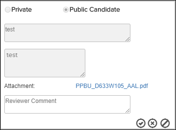

Not applicable for Pinpoint Standalone Light.
A user with permissions to create, edit, and delete annotations can use this feature
to review and approve or reject annotations created as a Public
Candidate.
Note: Annotations created by users without permission to make them
public are created as a "Public Candidate". These annotations must be
approved by a user with appropriate permissions before they are made public.
Refer to Create New Annotation for more
information.
This icon  appears in the Annotations /
Supplemental Contents header for administrators when there are
public candidate annotations to be reviewed. The number indicates how many public
candidates are within the document.
appears in the Annotations /
Supplemental Contents header for administrators when there are
public candidate annotations to be reviewed. The number indicates how many public
candidates are within the document.
To review a public candidate annotation, follow the steps below:
-
Click the pencil icon (
 or
or  ) to
enable editing.
This dialog appears when you edit from the "View Annotations" box, for example:
) to
enable editing.
This dialog appears when you edit from the "View Annotations" box, for example: